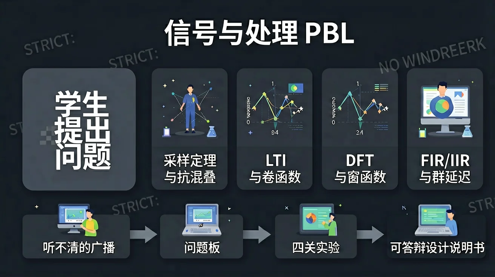
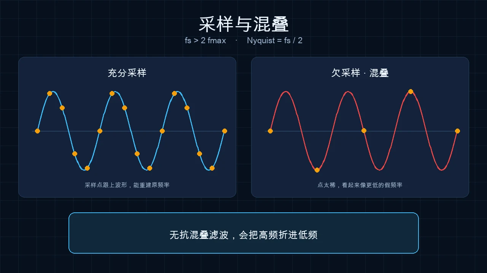
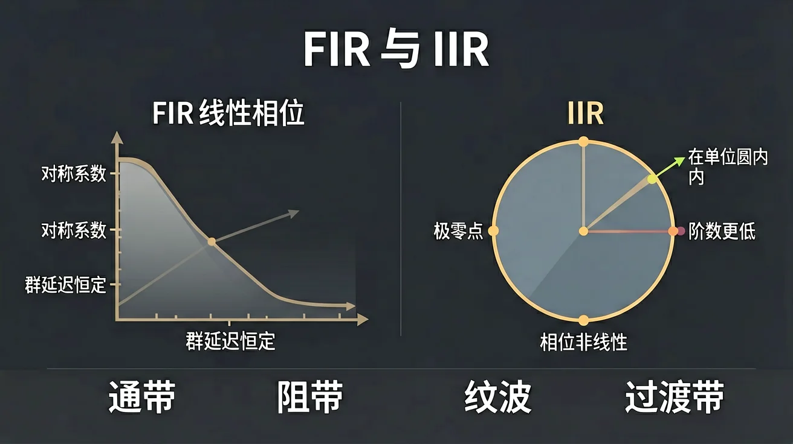

广播听不清，你的第一个真正的问题是什么？

选一个你关心的问题，后面的内容会围绕它展开。
选择或输入后，本课会围绕你的问题展开。
已经知道：声音能录音、能放大，软件里有「降噪」按钮。
但是：操场广播听不清时，开大音量往往更糟，你说不清该动采样、频谱还是系统。
所以：先把困惑写成可检验的问题，理论只为回答这些问题而出现。
听现象 → 提问 → 做对照实验 → 用公式辩护
藏知识覆盖表、公开问题板；缺哪块就给反例，不先抛章节名
四道关卡答辩。Demo 能跑但讲不清采样，不算过关
四段合成播报，标签故意不写理论。只记录事实：更响？更闷？有没有嗡声？
教师：学生说「B 最好」时不要纠正，进入问题板后再用削波谐波打脸。
点示范看如何改写。自己的问题必须可被一次实验证伪。
第 1 周交付物只有：事实清单、问题板、一条升级后的 L3。
这题不打分，用来暴露直觉。后面四关会回来打脸或确认。
学生看见问题板；教师看见覆盖表。每周对照：采样、LTI、卷积、DFT、窗、滤波、相位。缺哪块就加反例，不直接加讲座标题。

x(t) 与 x[n]=x(nTs)。Ts=1/fs 是唯一的时间尺子。
采样后无法区分 f 与 fs−f。低通必须在 ADC 之前。
约 6N dB（满幅正弦）。位数不够是另一种「听不清」。
互动要点：让学生先猜「fs 降到 4 kHz 语谱图会怎样」，再拖滑块。预测—观察—解释。
固定一个频率 f，降低 fs。重建曲线变成更低的频率时，混叠已经发生。
线性、时不变、因果、稳定。B 段削波：2x 的输出 ≠ 2y，卷积公式立刻失效。
h[n] 是系统对 δ[n] 的回答。一旦 LTI，任意输入都由卷积决定。FFT 卷积只是快算法，边界要处理。
互动要点：让学生对自己的「降噪块」做线性检验。说不清是否 LTI，就禁止进入滤波器设计。
看见它：同一句话，时域像乱线，听感却分得出闷和嗡。拆开它：采样、系统、频谱、滤波是四块积木，不是一个旋钮。解释它：LTI 时卷积成立，削波后公式失效。比较它：FIR 换线性相位，IIR 换阶数。迁移它：心音、电机振动，仍是同一组问题。
由观测时长 T 决定，不是由「FFT 点数感觉」。零填充只插值。
矩形主瓣窄、旁瓣高；Hann 相反。选窗就是在分辨率与泄漏之间权衡。
真频率若不正好落在 k·Δf 上，能量漏到邻线。这就是「对不准 50.0 Hz」。
互动要点：先让学生把 N 从 64 拖到 512，写下 Δf；再开零填充口头题：谱线密了，峰有没有变窄？
外部仿真（PhET 波）：把「频率、振幅」从时域再看一遍。

有限 h[n]，可做成线性相位。语音均衡常用。代价是阶数高、延迟大。
递归，极零点决定频响。陷波哼声很合适。必须查稳定性与振铃。
互动要点：同一指标逼学生交两条链路。听感「更干净但更空」往往是相位/过渡带，不是 SNR 数字更好。
奈奎斯特论证、折叠例子、抗混叠是否需要、量化 SNR。抽问：fs 减半语谱图怎样。
线性检验、h[n]、卷积核对图。抽问：FFT 卷积与时域卷积何时等价。
Δf 计算、窗的理由、语音/噪声频带假设。抽问：零填充提高了什么。
FIR 与 IIR 各一、极零图、幅频相频、SNR/可懂度对照。
另：问题日志 15% · 可复现脚本 15% · 说明书 15% · 期末抽问 15%。掌握导向：未达标准不计分、限一次补交。
易错点：误认为开大音量就能提高可懂度；混淆 FFT 点数与频率分辨率（零填充只让谱线更密）；把滤波当黑盒调参、不写通带阻带与相位代价。
正弦、复数 e^{jω}、欧拉公式还不熟 → 先做 1 页旋转相量再进 DFT。
会听不会算 → 用本页实验台填空：先抄 Δf 公式，再改 N。
关卡产物能答辩 → 进入下一问题循环。
IIR 量化后极点移出单位圆，或 DTMF/Goertzel 识别。仍从新问题开始。
本节点的前置、后续和同域知识。